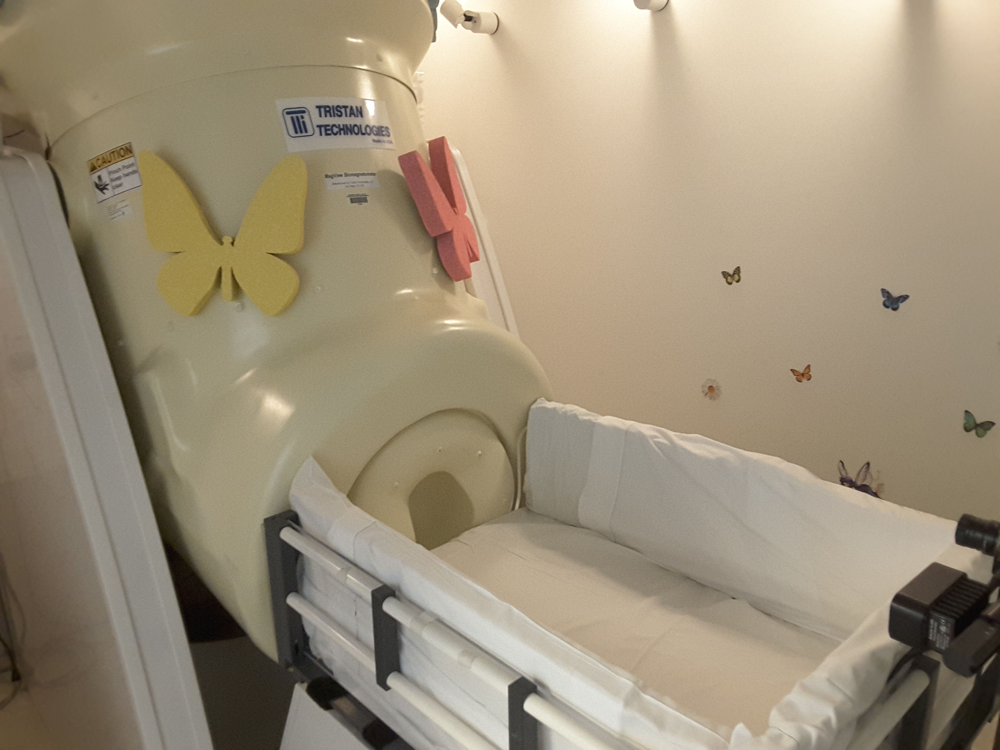
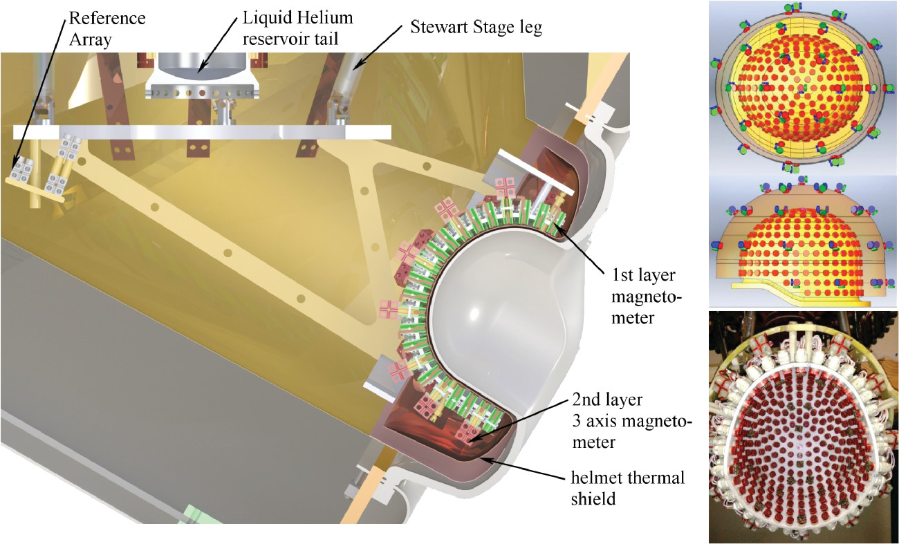
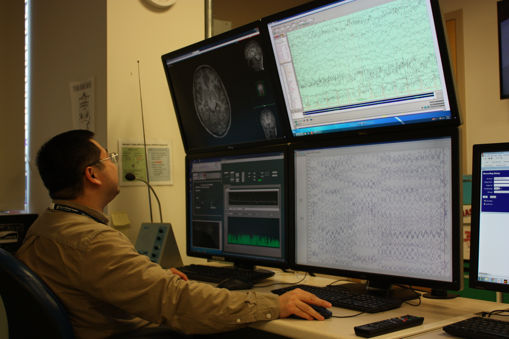

<!--
@license
Copyright (c) 2016 The Polymer Project Authors. All rights reserved.
This code may only be used under the BSD style license found at http://polymer.github.io/LICENSE.txt
The complete set of authors may be found at http://polymer.github.io/AUTHORS.txt
The complete set of contributors may be found at http://polymer.github.io/CONTRIBUTORS.txt
Code distributed by Google as part of the polymer project is also
subject to an additional IP rights grant found at http://polymer.github.io/PATENTS.txt
-->

<link rel="import" href="../../bower_components/polymer/polymer.html">

<link rel="import" href="../common-element/footer-element.html">
<link rel="import" href="../common-element/toc-behavior.html">
<link rel="import" href="../common-element/member-card-element.html">

<link rel="import" href="../common-element/common-styles.html">

<dom-module id="meg-whatismeg">
  <template>
    <style include="common-styles"></style>
    <style>
      :host {
        display: block;
      }


    </style>

    <article>
      <header class="center">
        <h1>What is MEG?</h1>
      </header>

      <nav>
        <div>Contents</div>
        <ul>
          <li><a href="#overview" label="overview" on-tap="__scrollTo">Overview</a></li>
          <li><a href="#hardware" label="hardware" on-tap="__scrollTo">Hardware</a></li>
          <li><a href="#recordings" label="recordings" on-tap="__scrollTo">Recordings</a></li>
        </ul>
      </nav>

      <main>

        <section id="overview" class="center">
          <h2>Overview</h2>
          <div class="imageContainer maxflow">
            <div>
              
            </div>
          </div>
          <div class="imageContainer maxflow">
            <div>
              <p> Magnetoencephalography (MEG) is a completely non-invasive, non-hazardous neuroimaging method that measures electromagnetic signals
               generated by the human brain. It detects magnetic flux occurring at the scalp surface by underlying intracellular electrical currents in
               the brain. Signals arise from synchronous firing of a large number of neurons across several layers of the cortex. MEG provides direct,
               real-time monitoring of the dynamics of neural signals with high spatial (several millimeters to couple centimeters) and temporal (milliseconds)
               resolution.</p> 
            </div>
          </div>
        </section>


        <section id="hardware" class="center">
          <h2>Hardware</h2>
          <div class="imageContainer maxflow">
            <div>
              
            </div>
          </div>
          <div class="imageContainer maxflow">
            <div>
              <p> Our babyMEG is equipped with an array of 384 magnetometers arranged in a helmet-like dewar designed for children under 3 years old.  It has
                270 magnetometers  in the inner layer, 35 units of 3-axis magnetometers in the outer layer, and 9 reference magnetometers away from the sensor
                  array. The babyMEG has a special position adjusting mechanism to achieve a short, uniform gap distance of about 8 mm between sensors and cortical
                  generators to make the sensors selectively sensitive to the neuromagnetic field flowing tangential to the scalp. As magnetic fields generated by
                neural activity are exceedingly weak (almost 10 million times smaller than the Earth's magnetic field), the coils are coupled to a superconducting
                  quantum intereference device (SQUID) to provide a proportional voltage output. Our system has been optimized with a coil-in-vacuum design derived
                from the babySQUID that allows the sensors to be placed closer to the scalp of neonates, infants, and toddlers. To detect the tiny magnetic fields
                generated by neural activity, detection coils and sensors are maintained at cryogenic temperatures by the use of liquid helium.  A unique feature
                  to our babyMEG system is the liquid helium recycler, which consists of a 2-stage, 4K pulse-tube cryocooler with the capability to re-liquefy 17L/d
                of liquid helium such that it can provide a fully maintenance-free operation under computer control without adding helium gas and manual transfer
                of cryogen. </p>
            </div>
          </div>
        </section>

        <section id="recordings" class="center">
          <h2>Recordings</h2>
          <div class="imageContainer maxflow">
            <div>
              
            </div>
          </div>
          <div class="imageContainer maxflow">
            <div>
              <p> Recording occurs inside a dual-layered magnetically shielded room designed to reduce external noise. Algorithms to enhance the quality of signal
                and to remove mechanical and biological artifacts are applied to the data. Data collected may represent spontaneous or evoked neural responses. At
                each point in time, the surface distribution of the magnetic flux is represented by a topographic map and modeled in source space using a variety
                of estimation techniques. These include an equivalent current dipole source estimation (Sarvas, 1987; Hämäläinen et al., 1993) and minimum norm
                estimation (Hämäläinen and Ilmoniemi, 1994). Information from multiple imaging modalities including electroencephalography (EEG), structural magnetic
                resonance imaging (MRI), and diffusion tensor imaging (DTI) as well as data from three-dimensional head shape, real-time head and eye position and
                motion monitoring, electrooculography (EOG), and electrocardiography (ECG) may be integrated with MEG data to provide a detailed model of the cortical
                mechanisms underlying perceptions, cognition, and actions in the normal and diseased brain. In clinical practice, MEG is used to guide presurgical
                mapping of the motor, somatosensory, auditory, visual, and eloquent cortices for neurosurgical candidates with epilepsy, brain tumors, or
                arteriovenous malformations.</p>
            </div>
          </div>
        </section>

      </main>

      <footer-element></footer-element>

    </article>

  </template>

  <script>
    Polymer({
      is: 'meg-whatismeg',
      behaviors: [TOCBehavior],
    });
  </script>
</dom-module>
